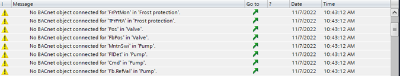
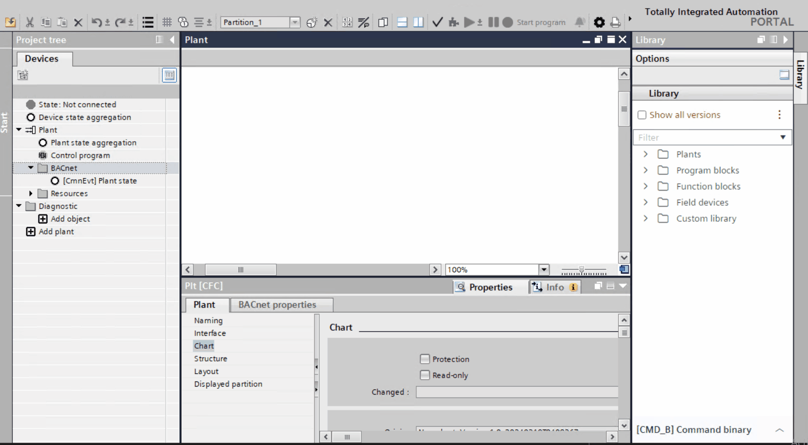

自动连接并自动创建 I/O 数据点和其他 BACnet 对象与功能块的关联
执行两阶段逻辑，将 I/O 数据点和其他 BACnet 对象与缺少关联的功能块相关联。第一步，检查控制程序中是否存在匹配的 I/O 数据点或 BACnet 对象，并且可以链接到这些功能块。如果无法创建关联，请尝试在第二步中实例化库中的 I/O 数据点。
- A control program exists, but the BACnet objects are not assigned to the I/O data points. In the Project tree, only few BACnet objects are available.

- Click Check .
- The objects without BACnet objects are listed.

- (Optional) Select a row and click Go to .
- The control program opens. The I/O data point displays without a BACnet object information.

- Click Auto-connect and auto-create BACnet objects .
- The I/O data points in the Project tree are assigned to BACnet objects. The assignment is based on the two-stage logic.

- Click Check .
- The remaining objects without BACnet objects are listed.
- Rework the unassigned objects with library objects.
Manually assign remaining I/O data points
- In the Library tab, enter the filter name predef.
- Drag a corresponding library object to the I/O data point in the control program.

- Open the Properties tab.
- Rework the original library information with the current project information of that data point.
Note： BACnet 对象（属性Name) 和控制程序中的 I/O 数据点通过属性分配Preferred object。该算法搜索整个项目树以分配相应的对象，因此该对象不一定必须位于同一层次结构级别。

Support auto-connect and auto-create with naming extension
自动连接和自动创建 BACnet 对象会考虑任何提供的对象扩展，并且：
- Connects an xFB to a matching BACnet object with the provided object extension.
- Creates a matching BACnet object with the provided extension, if there is no BACnet object available to connect.

- From the Library, drag two Field devices (xFBs) to the chart.
- To detach the XFBs, go to Properties > Block.
In the BACnet object type field, select None.
Or
Go to the Project tree and right-click the BA object and select Delete. - Select the xFBs and go to Properties > Structure.
- In the Obj. extension field, for example, enter the extension as 1 and 2 respectively.
In the Project tree, select the BA objects and give the same extension as of the xFBs. - Click Auto-connect and auto-create BACnet objects .
- The preferred objects in the chart is connected to the BA objects in the Project tree.
- If the preferred objects do not match with the BA object in the Project tree, a new BA object is created in the Project tree with similar properties of the preferred object.
- In the Project tree, select the object in the BACnet folder.
- Right-click and select Properties.
- The Name, Description and Name extension matches with that of the xFB properties.
- Right-click the xFBs and select Show in plant structure.
- The xFBs takes you to the connected BA object in the Project tree.